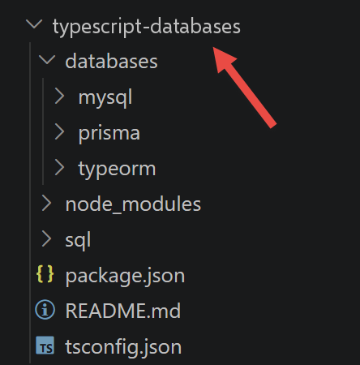
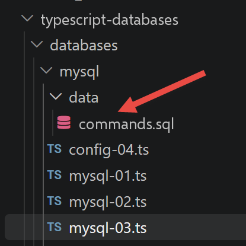

7. Database Access

The following chapters round out the course by covering database access from TypeScript scripts, drawing inspiration from the chapters “Using the MySQL DBMS” and “Using the SQLAlchemy ORM” in the course “Introduction to Python 3 and the Flask Framework” (2019). Three approaches are presented in succession: direct access to the DBMS using the native mysql2 driver, followed by two ORM (object-relational mapping) approaches—TypeORM and Prisma.
7.1. Direct Access to the Database
Two SQL scripts, provided with this chapter, allow you to create the test databases: dbpersons (a single table, used in the chapter on the native driver) and dbschool (four interconnected tables, used in the two chapters on ORM).

7.1.1. Preparing the [dbpersons] database
The dbpersons database contains only one table, persons, which uses the same schema as the one used in the Python course (columns id, first\_name, last\_name, age, with a uniqueness constraint on the pair (last\_name, first\_name)). The SQL script sql/create_dbpersons.sql below creates the database, the application user, and the table, then inserts five arbitrary people into it:
| -- create_dbpersons.sql
-- Recreates the [dbpersons] database used by the chapter "Accessing MySQL with the
-- native [mysql2] driver", with arbitrary data (the originals of the 2020
-- Python/Flask course being no longer available).
--
-- Usage:
-- mysql -u root -p < create_dbpersons.sql
--
-- Creates the database, the application user [admpersons/nobody] (same
-- credentials as the original course) and the [persons] table.
DROP DATABASE IF EXISTS dbpersons;
CREATE DATABASE dbpersons CHARACTER SET utf8mb4 COLLATE utf8mb4_unicode_ci;
CREATE USER IF NOT EXISTS 'admpersons'@'localhost' IDENTIFIED BY 'nobody';
GRANT ALL PRIVILEGES ON dbpersons.* TO 'admpersons'@'localhost';
FLUSH PRIVILEGES;
USE dbpersons;
CREATE TABLE persons (
id INT PRIMARY KEY,
first_name VARCHAR(30) NOT NULL,
last_name VARCHAR(30) NOT NULL,
age INTEGER NOT NULL,
UNIQUE (last_name, first_name)
);
-- arbitrary data (same persons as the examples of the original course)
INSERT INTO persons (id, first_name, last_name, age) VALUES
(1, 'Paul', 'Langevin', 48),
(2, 'Sylvie', 'Lefur', 70),
(3, 'Pierre', 'Nicazou', 35),
(4, 'Geraldine','Colou', 26),
(5, 'Paulette', 'Girond', 56);
|
To create this database (MySQL), you can use the [HeidiSQL] tool from Laragon. We’ve already used it.
- In [1], start all Laragon services. This will start the MySQL DBMS;
- in [2], access the [HeidiSQL] database management tool;
- In [1-2], log in to MySQL;
Using [1-2], run the two SQL files in the project one after the other:
While still in [HeidiSQL], run F5 to refresh the display:
We are now ready to use these two databases.
7.1.2. script [mysql-01]
First look at the mysql2 driver (mysql2/promise module, which exposes a API based on Promises rather than callbacks): open a connection to dbpersons, then close it. This follows the same approach as the Python script [mysql_01] (Chapter 16).
| // databases/mysql/mysql-01.ts
// First step: connect to the MySQL database [dbpersons] then
// disconnect. Ports the Python script [mysql_01] of the Python/Flask course.
import mysql from 'mysql2/promise';
// connection to the MySQL database [dbpersons]
// the user's identity is (admpersons, nobody)
const USER = 'admpersons';
const PWD = 'nobody';
const HOST = 'localhost';
const DATABASE = 'dbpersons';
// here we go
let connection: mysql.Connection | undefined;
try {
console.log('Connecting to the MySQL DBMS...');
// connection
connection = await mysql.createConnection({ host: HOST, user: USER, password: PWD, database: DATABASE });
// follow-up
console.log(
`Successful MySQL connection to database=${DATABASE}, host=${HOST} as user=${USER}, passwd=${PWD}`,
);
} catch (error) {
// display the error
console.log(`The following error occurred: ${error}`);
} finally {
// close the connection if it was opened
if (connection) {
await connection.end();
}
}
|
Let’s comment on this code:
- line 16: [mysql.createConnection({ host: HOST, user: USER, password: PWD, database: DATABASE })] — opens a single, asynchronous connection — createConnection returns a Promise<Connection>, hence the
await; this is the TypeScript equivalent of mysql.connector.connect(...) on the Python side;
- line 29: [connection.end()] — gracefully closes the connection in the
finally block, regardless of whether an error occurred — the connection is declared outside the try block (type mysql.Connection | undefined) to remain accessible at this level.
Let’s run this script:
npx tsx databases/mysql/mysql-01.ts
Execution result:
| Connecting to the MySQL DBMS...
Successful MySQL connection to database=dbpersons, host=localhost as user=admpersons, passwd=nobody
|
7.1.3. script [mysql-02]
This time, the connection is encapsulated in a reusable function connect(host, database, login, pwd), which is called first with valid credentials and then a second time with invalid credentials to observe the error returned by the driver. The Python script is named **[mysql\_02]**.
| // databases/mysql/mysql-02.ts
// In this new script, the database connection is isolated in a function.
// Ports the Python script [mysql_02].
import mysql from 'mysql2/promise';
// connects then disconnects (login, pwd) from database [database] on server [host]
// throws an exception if there is a problem
async function connect(host: string, database: string, login: string, pwd: string): Promise<void> {
let cnx: mysql.Connection | undefined;
try {
// connection
cnx = await mysql.createConnection({ host, user: login, password: pwd, database });
console.log(
`Successful connection to database=${database}, host=${host} as user=${login}, passwd=${pwd}`,
);
} finally {
// close the connection if it was opened
if (cnx) {
await cnx.end();
console.log('Successful disconnection\n');
}
}
}
// ---------------------------------------------- main
// connection credentials
const USER = 'admpersons';
const PASSWD = 'nobody';
const HOST = 'localhost';
const DATABASE = 'dbpersons';
// connection of an existing user
try {
await connect(HOST, DATABASE, USER, PASSWD);
} catch (error) {
// display the error
console.log(String(error));
}
// connection of a non-existent user
try {
await connect(HOST, DATABASE, 'xx', 'xx');
} catch (error) {
// display the error
console.log(String(error));
}
|
Let’s comment on this code:
- line 9: [async function connect(host, database, login, pwd): Promise<void>] — an async function that returns nothing but can raise an exception — it does not catch connection errors itself; instead, it lets them propagate to the caller;
- line 40: [await connect(HOST, DATABASE, 'xx', 'xx')] — the second call, with a user “xx” who does not exist on the MySQL side, raises an exception that the enclosing
catch block displays.
Let’s run this script:
npx tsx databases/mysql/mysql-02.ts
Execution result:
| Successful connection to database=dbpersons, host=localhost as user=admpersons, passwd=nobody
Successful disconnection
Error: Access denied for user 'xx'@'localhost' (using password: YES)
|
Version-specific issue: On a recent MySQL server (8.4 and later), this second call may produce a different message: "Error: Plugin 'mysql_native_password' is not loaded" instead of "Access denied for user 'xx'@'localhost'." The cause is unrelated to the script: to avoid revealing whether an account exists or not (anti-enumeration protection), MySQL simulates an authentication exchange when logging in with an unknown user—and this simulation is hardcoded to use the legacy plugin mysql_native_password, which has been disabled by default since MySQL 8.4. The principle demonstrated by this script (an exception thrown and intercepted on invalid credentials) remains intact; to restore the exact message displayed, add `mysql_native_password=ON` below `[mysqld]` in the server’s `my.ini` file, then restart the server.
7.1.4. script [mysql-03]
We know how to connect; we now issue a SQL command over the connection to (re)create the “persons” table with a slightly different schema (without the “id” column, using a composite primary key). This is handled by the Python script [mysql_03].
| // databases/mysql/mysql-03.ts
// Now that we know how to connect, we issue SQL statements on the connection:
// we (re)create the [persons] table of the [dbpersons] database.
// Ports the Python script [mysql_03].
import mysql from 'mysql2/promise';
// executes an update query on the connection
async function executeSql(connection: mysql.Connection, query: string): Promise<void> {
await connection.query(query);
}
// ---------------------------------------------- main
// connection credentials
const ID = 'admpersons';
const PWD = 'nobody';
const HOST = 'localhost';
const DATABASE = 'dbpersons';
// we go step by step
let connection: mysql.Connection;
try {
// connection — mysql2 executes each query in its own transaction,
// auto-committed by default (equivalent of AUTOCOMMIT=True on the Python side)
connection = await mysql.createConnection({ host: HOST, user: ID, password: PWD, database: DATABASE });
} catch (error) {
console.log(`The following error occurred: ${error}`);
process.exit(1);
}
// deletion of the persons table if it exists
// if it does not exist an error will occur - we ignore it
try {
await executeSql(connection, 'drop table persons');
} catch {
// ignored
}
// creation of the persons table
const query =
'create table persons (id int PRIMARY KEY, first_name varchar(30) NOT NULL, last_name varchar(30) NOT NULL, ' +
'age integer NOT NULL, unique(last_name,first_name))';
try {
await executeSql(connection, query);
console.log(`${query}: query succeeded`);
} catch (error) {
console.log(`The following error occurred: ${error}`);
} finally {
await connection.end();
}
|
Let’s comment on this code:
- line 9: [await connection.query(query)] — connection.query() directly executes a string SQL without parameters — we’ll see the safer, parameterized version using execute() in the script [mysql-05];
- Line 28: [await executeSql(connection, 'drop table persons')] — an attempt is made to delete the table within an empty try/catch block: if the table does not yet exist, the error MySQL is simply ignored.
Let’s run this script:
npx tsx databases/mysql/mysql-03.ts
Execution result:
| create table persons (id int PRIMARY KEY, first_name varchar(30) NOT NULL, last_name varchar(30) NOT NULL, age integer NOT NULL, unique(last_name,first_name)): query succeeded
|
7.1.5. A reusable module: [mysql-module.ts]
Before writing the main script [mysql-04], which executes an entire file of commands SQL, we factor the execution logic for a list of commands—with or without a transaction—into a module, along with the display of each command’s result (lines for a SELECT, or the number of modified lines for a INSERT/UPDATE/DELETE). The Python module is named [mysql_module].
| // databases/mysql/mysql-module.ts
// Reusable functions to execute a list (or a file) of SQL commands
// on an open MySQL connection. Ports the Python module [mysql_module].
import type { Connection, FieldPacket, ResultSetHeader, RowDataPacket } from 'mysql2/promise';
import { readFile } from 'node:fs/promises';
// displays the result of an SQL command (result of a mysql2 query())
// - if there is a [fields] array, it was a SELECT: we display the columns
// then the rows;
// - otherwise, it was an update statement (INSERT/UPDATE/DELETE/DDL): we
// display the number of modified rows (equivalent of cursor.rowcount).
function displayInfo(rows: RowDataPacket[] | ResultSetHeader, fields: FieldPacket[] | undefined): void {
if (fields && fields.length > 0) {
// it was a SELECT — fields describes the requested columns
const titles = fields.map((f) => f.name);
console.log(titles.join(', '));
console.log('*'.repeat(titles.join(', ').length));
for (const row of rows as RowDataPacket[]) {
console.log(titles.map((t) => row[t]));
}
console.log('*'.repeat(titles.join(', ').length));
} else {
// no columns described — update statement
const header = rows as ResultSetHeader;
console.log(`number of modified rows: ${header.affectedRows}`);
}
}
// uses the open connection [connection]
// executes on this connection the SQL commands contained in the list [sqlCommands]
// (one command per element; empty lines or lines starting with # are ignored)
// - if verbose=true, each execution of an SQL statement is followed by a display
// indicating its success or failure;
// - if stop=true, the function stops at the 1st error encountered, otherwise
// it executes all the commands;
// - if withTransaction=true, any error cancels all the SQL statements
// executed before (rollback); otherwise each command is committed
// independently (default behaviour of mysql2);
// the function returns an array [error1, error2, ...]
export async function executeListOfCommands(
connection: Connection,
sqlCommands: string[],
verbose = false,
stop = true,
withTransaction = true,
): Promise<string[]> {
const errors: string[] = [];
if (withTransaction) {
await connection.beginTransaction();
}
try {
for (const rawCommand of sqlCommands) {
// remove the leading and trailing blanks of the current command
const command = rawCommand.trim();
// empty command or comment? move on to the next one
if (command === '' || command[0] === '#') {
continue;
}
// execution of the current command
try {
const [rows, fields] = await connection.query(command);
// no error
if (verbose) {
console.log(`[${command}]: Successful execution`);
}
displayInfo(rows as RowDataPacket[], fields);
} catch (error) {
const msg = `${command}: Error (${error})`;
errors.push(msg);
if (verbose) {
console.log(msg);
}
// do we stop?
if (withTransaction || stop) {
return errors;
}
}
}
return errors;
} finally {
// commit / roll back the transaction if there is one
if (withTransaction) {
if (errors.length > 0) {
await connection.rollback();
} else {
await connection.commit();
}
}
}
}
// uses the open connection [connection]
// executes on this connection the SQL commands contained in the
// text file [sqlFilename] (one command per line)
export async function executeFileOfCommands(
connection: Connection,
sqlFilename: string,
verbose = false,
stop = true,
withTransaction = true,
): Promise<string[]> {
try {
const content = await readFile(sqlFilename, 'utf-8');
return await executeListOfCommands(connection, content.split('\n'), verbose, stop, withTransaction);
} catch (error) {
return [`The file ${sqlFilename} could not be processed: ${error}`];
}
}
|
Let’s comment on this code:
- line 45: [if (withTransaction) { await connection.beginTransaction(); }] — mysql2 is in AUTOCOMMIT mode by default (each query is validated individually) — beginTransaction() explicitly switches the connection to transactional mode, just as connexion.start_transaction() would on the Python side;
- line 76: [if (withTransaction || stop) { return errors; }] — in transactional mode, the first error immediately terminates the loop — continuing would be pointless since the entire transaction will be rolled back anyway;
- line 82: [if (errors.length > 0) { await connection.rollback(); } else { await connection.commit(); }] — global commit or rollback, depending on whether an error occurred or not — see, however, the pitfall noted in the [mysql-04] script below.
The script also uses a small configuration module, config-04.ts, which centralizes the path to the SQL command file and the login credentials:
| // databases/mysql/config-04.ts
// Configuration of the [mysql-04] script: path of the SQL commands file and
// connection credentials for the [dbpersons] database.
import { fileURLToPath } from 'node:url';
import { dirname, join } from 'node:path';
const scriptDir = dirname(fileURLToPath(import.meta.url));
export function configure() {
return {
// file of SQL commands
commandsFilename: join(scriptDir, 'data', 'commands.sql'),
// database connection credentials
host: 'localhost',
database: 'dbpersons',
user: 'admpersons',
password: 'nobody',
};
}
|
Note: import.meta.url followed by fileURLToPath/dirname is the standard method, as defined in the ECMAScript module ("type": "module" in package.json), to retrieve the directory of the current file—the equivalent of the magic variable __dirname, which is available natively in CommonJS but not in ESM.
The script itself, data/commands.sql, follows the format used in the Python course (one command per line; empty lines or lines beginning with # are ignored):

| # deletion of the [persons] table
drop table persons
# creation of the persons table
create table persons (first_name varchar(30) not null, last_name varchar(30) not null, age integer not null, primary key (last_name,first_name))
# insertion of two persons
insert into persons(first_name, last_name, age) values('Paul','Langevin',48)
insert into persons(first_name, last_name, age) values ('Sylvie','Lefur',70)
# display of the table
select first_name, last_name, age from persons
# deliberate error
xx
# insertion of three persons
insert into persons(first_name, last_name, age) values ('Pierre','Nicazou',35)
insert into persons(first_name, last_name, age) values ('Geraldine','Colou',26)
insert into persons(first_name, last_name, age) values ('Paulette','Girond',56)
# display of the table
select first_name, last_name, age from persons
# list of persons in alphabetical order of last names and, for equal last names, in alphabetical order of first names
select last_name,first_name from persons order by last_name asc, first_name desc
# list of persons with an age in the interval [20,40] in descending order of age
# then, for equal ages, in alphabetical order of last names and, for equal last names, in alphabetical order of first names
select last_name,first_name,age from persons where age between 20 and 40 order by age desc, last_name asc, first_name asc
# insertion of Mme Bruneau
insert into persons(first_name, last_name, age) values('Josette','Bruneau',46)
# update of her age
update persons set age=47 where last_name='Bruneau'
# list of persons whose last name is Bruneau
select last_name,first_name,age from persons where last_name='Bruneau'
# deletion of Mme Bruneau
delete from persons where last_name='Bruneau'
# list of persons whose last name is Bruneau
select last_name,first_name,age from persons where last_name='Bruneau'
|
7.1.6. script [mysql-04]
The main script: it executes the file data/commands.sql using the previous module, with or without a transaction depending on a command-line parameter. Contains the Python script [mysql_04].
| // databases/mysql/mysql-04.ts
// Main script: executes the SQL commands file [data/commands.sql],
// with or without a transaction depending on the command-line parameter.
// Ports the Python script [mysql_04].
// npx tsx databases/mysql/mysql-04.ts true (with transaction)
// npx tsx databases/mysql/mysql-04.ts false (without transaction)
import mysql from 'mysql2/promise';
import { configure } from './config-04.js';
import { executeFileOfCommands } from './mysql-module.js';
const config = configure();
// ---------------------------------------------- main
// checking the call syntax
const args = process.argv.slice(2);
let error = args.length !== 1;
let withTransactionText = '';
if (!error) {
withTransactionText = args[0].toLowerCase();
error = withTransactionText !== 'true' && withTransactionText !== 'false';
}
if (error) {
console.log('syntax: mysql-04.ts true / false');
process.exit(1);
}
// computing a text
const withTransaction = withTransactionText === 'true';
const text = withTransaction ? 'with transaction' : 'without transaction';
// screen logs
console.log('--------------------------------------------------------------------');
console.log(`Executing the SQL file ${config.commandsFilename} ${text}`);
console.log('--------------------------------------------------------------------');
// execution of the SQL statements of the file
let connection: mysql.Connection | undefined;
let errors: string[] = [];
try {
// connection to the database
connection = await mysql.createConnection({
host: config.host,
user: config.user,
password: config.password,
database: config.database,
});
// execution of the SQL commands file
errors = await executeFileOfCommands(connection, config.commandsFilename, true, false, withTransaction);
} catch (fatalError) {
console.log(`The following fatal error occurred: ${fatalError}`);
process.exit(1);
} finally {
if (connection) {
await connection.end();
}
}
// display of the number of errors
console.log('--------------------------------------------------------------------');
console.log('Execution completed');
console.log('--------------------------------------------------------------------');
console.log(`There were ${errors.length} error(s)`);
for (const currentError of errors) {
console.log(currentError);
}
|
Let’s run it first without a transaction:
npx tsx databases/mysql/mysql-04.ts false
Execution result:
| --------------------------------------------------------------------
Executing the SQL file .../databases/mysql/data/commands.sql without transaction
--------------------------------------------------------------------
[drop table persons]: Successful execution
number of modified rows: 0
[create table persons (...)]: Successful execution
number of modified rows: 0
[insert into persons(first_name, last_name, age) values('Paul','Langevin',48)]: Successful execution
number of modified rows: 1
[insert into persons(first_name, last_name, age) values ('Sylvie','Lefur',70)]: Successful execution
number of modified rows: 1
[select first_name, last_name, age from persons]: Successful execution
first_name, last_name, age
**************************
[ 'Paul', 'Langevin', 48 ]
[ 'Sylvie', 'Lefur', 70 ]
**************************
xx: Error (Error: You have an error in your SQL syntax; ... near 'xx' at line 1)
[insert into persons(first_name, last_name, age) values ('Pierre','Nicazou',35)]: Successful execution
[insert into persons(first_name, last_name, age) values ('Geraldine','Colou',26)]: Successful execution
[insert into persons(first_name, last_name, age) values ('Paulette','Girond',56)]: Successful execution
[select first_name, last_name, age from persons]: Successful execution
first_name, last_name, age
**************************
[ 'Geraldine', 'Colou', 26 ]
[ 'Paulette', 'Girond', 56 ]
[ 'Paul', 'Langevin', 48 ]
[ 'Sylvie', 'Lefur', 70 ]
[ 'Pierre', 'Nicazou', 35 ]
**************************
(... rest of the SELECT/UPDATE/DELETE commands of the commands file, all executed despite the error ...)
--------------------------------------------------------------------
Execution completed
--------------------------------------------------------------------
There were 1 error(s)
xx: Error (Error: You have an error in your SQL syntax; ... near 'xx' at line 1)
|
Without a transaction, each command is validated independently: the single intentional error (command xx) does not prevent the subsequent commands from executing.
Now let’s run it with a transaction (on a table that has been reset to zero):
npx tsx databases/mysql/mysql-04.ts true
Execution result:
| --------------------------------------------------------------------
Executing the SQL file .../databases/mysql/data/commands.sql with transaction
--------------------------------------------------------------------
[drop table persons]: Successful execution
number of modified rows: 0
[create table persons (...)]: Successful execution
number of modified rows: 0
[insert into persons(first_name, last_name, age) values('Paul','Langevin',48)]: Successful execution
number of modified rows: 1
[insert into persons(first_name, last_name, age) values ('Sylvie','Lefur',70)]: Successful execution
number of modified rows: 1
[select first_name, last_name, age from persons]: Successful execution
first_name, last_name, age
**************************
[ 'Paul', 'Langevin', 48 ]
[ 'Sylvie', 'Lefur', 70 ]
**************************
xx: Error (Error: You have an error in your SQL syntax; ... near 'xx' at line 1)
--------------------------------------------------------------------
Execution completed
--------------------------------------------------------------------
There were 1 error(s)
xx: Error (Error: You have an error in your SQL syntax; ... near 'xx' at line 1)
|
This time, the error terminates the loop as soon as it occurs (see mysql-module.ts, line 76): the commands following the error (updates, deletes, etc.) are never executed. The code then calls connection.rollback() to roll back the transaction.
Caution: You might expect the `persons` table to be empty after this `rollback()`—that’s what the original Python course on SQLAlchemy incorrectly states. In reality, with MySQL/MariaDB (as with most DBMSs), the data definition statements (DDL: CREATE TABLE, DROP TABLE...) implicitly commit and roll back any ongoing transactions before executing. Here, the CREATE and TABLE from the second command have therefore already (invisibly) committed everything that came before, including—since there was nothing before it—themselves; the two INSERT commands that follow then, in effect, open a new implicit transaction, which will indeed be rolled back... except that, in practice, checking the database shows that the two inserted rows remain present after the rollback(): the CREATE TABLE committed the transaction while the loop was still running, even before the subsequent INSERT statements were executed—these, too, are therefore permanently committed as soon as they are executed, outside of any explicit transaction. Remember the general rule: a DDL cannot be rolled back by a ROLLBACK, and it silently commits any transaction that was open before it.
7.1.7. [mysql-05] script
Last script in this chapter: parameterized queries. We recreate the persons table with the id column schema (as in the script **[mysql-03]), then insert people one by one using a prepared statement (connection.execute(), parameters ?), and insert an entire list of people in a single multi-row query (connection.query() with values ?). This is the Python script [mysql_05]**.
| // databases/mysql/mysql-05.ts
// Parameterized queries: single prepared insertion, then bulk insertion.
// Ports the Python script [mysql_05]. Here we recreate the [persons] table with
// the schema having an [id] column (as in script mysql-03), so that this script
// is independent of the state left by mysql-04.
import mysql from 'mysql2/promise';
// the user's identity
const ID = 'admpersons';
const PWD = 'nobody';
// the DBMS host machine
const HOST = 'localhost';
// identity of the database
const DATABASE = 'dbpersons';
type Person = [id: number, lastName: string, firstName: string, age: number];
// list of persons (id, lastName, firstName, age)
const persons: Person[] = [];
for (let i = 0; i < 5; i++) {
persons.push([i, `l0${i}`, `f0${i}`, i + 10]);
}
persons.push([40, "d'Aboot", "Y'éna", 18]);
// another list of persons
const otherPersons: Person[] = [];
for (let i = 0; i < 5; i++) {
otherPersons.push([i + 100, `l1${i}`, `f1${i}`, i + 20]);
}
otherPersons.push([200, "d'Aboot", "F'ilhem", 34]);
// access to the DBMS
let connection: mysql.Connection | undefined;
try {
// connection
connection = await mysql.createConnection({ host: HOST, user: ID, password: PWD, database: DATABASE });
// (re)creation of the table with the [id]-column schema (see mysql-03.ts)
await connection.query('drop table if exists persons');
await connection.query(
'create table persons (id int PRIMARY KEY, first_name varchar(30) NOT NULL, last_name varchar(30) NOT NULL, ' +
'age integer NOT NULL, unique(last_name,first_name))',
);
// deletion of the existing records
await connection.query('delete from persons');
// person-by-person insertions with a prepared statement
for (const person of persons) {
const [id, lastName, firstName, age] = person;
await connection.execute('insert into persons(id,last_name,first_name,age) values(?,?,?,?)', [id, lastName, firstName, age]);
}
// bulk insertion of a list of persons — equivalent of executemany:
// mysql2 offers connection.query('insert ... values ?', [[...],[...],...])
// which builds a single multi-row query
const values = otherPersons.map(([id, lastName, firstName, age]) => [id, lastName, firstName, age]);
await connection.query('insert into persons(id,last_name,first_name,age) values ?', [values]);
// committing the transaction — here each query has already been auto-committed
// (mysql2 is in AUTOCOMMIT mode by default, like the default mode mentioned in
// script mysql-03; so there is nothing to commit explicitly)
console.log(`${persons.length + otherPersons.length} persons inserted.`);
} catch (error) {
console.log(`The following error occurred: ${error}`);
} finally {
if (connection) {
await connection.end();
}
}
|
Let’s comment on this code:
- line 23: [persons.push([40, "d'Aboot", "Y'éna", 18])] — a first and last name containing an apostrophe — intentionally included to verify that parameterized queries properly escape the values (unlike string concatenation SQL, which is vulnerable to injection);
- line 50: [await connection.execute('insert into persons(id,last_name,first_name,age) values(?,?,?,?)', [id, lastName, firstName, age])] —
execute() prepares the parameterized query and then executes it with the provided array of values — the ? placeholders are safely replaced, including apostrophes;
- line 56: [await connection.query('insert into persons(id,last_name,first_name,age) values ?', [values])] — mysql2 thus provides the equivalent of Python’s
executemany(): a single multi-line query SQL constructed from an array of arrays, which is more efficient than a loop of individual inserts.
Let’s run this script:
npx tsx databases/mysql/mysql-05.ts
Execution result:
Database verification (using HeidiSQL):
7.1.8. Conclusion
The native mysql2 driver provides direct, straightforward access to the DBMS: you write the SQL yourself, manage transactions yourself, and the result of a query is a simple array of rows JavaScript. This is the same approach as that of the Python module mysql.connector used in Chapter 16 of the Python/Flask course. The next two chapters show how a ORM (TypeORM, then Prisma) allows you to write these same operations without writing SQL, by manipulating typed TypeScript objects.
7.2. Using the TypeORM ORM
We will now discuss ORM, drawing on the chapter “Using the SQLAlchemy ORM” (Chapter 19) from the Python/Flask course. The principle behind ORM (object-relational mapping) is to manipulate language objects rather than writing SQL: a class corresponds to a table, an instance to a row, an attribute to a column, and a relationship between classes (association, composition) to a foreign key.
Two ORM implementations are presented one after the other, using the same example, so they can be compared: TypeORM in this chapter, followed by Prisma in the next chapter. Of the two, TypeORM is the one whose style most closely resembles SQLAlchemy (decorated classes, Repository queried using methods); Prisma, on the other hand, generates a fully typed client from a separate declarative schema file.
7.2.1. Preparing the Database [dbschool]
The two ORM chapters use a more comprehensive database than dbpersons, the dbschool database, consisting of four interconnected tables—based on the same “complete example” from Chapter 19 of the Python course: a class contains students, each student has grades in subjects, and each subject has a weighting:
| -- create_dbschool.sql
-- Recreates the [dbschool] database used by the ORM chapters (TypeORM and Prisma),
-- a port of the [Class / Student / Subject / Grade] schema of chapter 19 of the
-- Python/Flask course ("Using the SQLALCHEMY ORM", scripts 05 — complete
-- example), with arbitrary data (the original database being no longer
-- available). Table/column names are deliberately unaccented
-- (ASCII identifiers), safer with MySQL/TypeORM/Prisma.
--
-- Usage:
-- mysql -u root -p < create_dbschool.sql
DROP DATABASE IF EXISTS dbschool;
CREATE DATABASE dbschool CHARACTER SET utf8mb4 COLLATE utf8mb4_unicode_ci;
CREATE USER IF NOT EXISTS 'admschool'@'localhost' IDENTIFIED BY 'pwdschool';
GRANT ALL PRIVILEGES ON dbschool.* TO 'admschool'@'localhost';
FLUSH PRIVILEGES;
USE dbschool;
-- a class (e.g. [class1], [class2])
CREATE TABLE classes (
id INT AUTO_INCREMENT PRIMARY KEY,
name VARCHAR(30) NOT NULL UNIQUE
);
-- a student belongs to a class (N-1 relationship)
CREATE TABLE students (
id INT PRIMARY KEY,
last_name VARCHAR(30) NOT NULL,
first_name VARCHAR(30) NOT NULL,
class_id INT NOT NULL,
CONSTRAINT fk_students_class FOREIGN KEY (class_id) REFERENCES classes(id)
);
-- a subject (e.g. [subject1], coefficient 1)
CREATE TABLE subjects (
id INT AUTO_INCREMENT PRIMARY KEY,
name VARCHAR(30) NOT NULL UNIQUE,
coefficient DECIMAL(4,2) NOT NULL
);
-- a grade is the grade of a student in a subject (N-1, N-1 relationships)
CREATE TABLE grades (
id INT AUTO_INCREMENT PRIMARY KEY,
value DECIMAL(4,2) NOT NULL,
student_id INT NOT NULL,
subject_id INT NOT NULL,
CONSTRAINT fk_grades_student FOREIGN KEY (student_id) REFERENCES students(id),
CONSTRAINT fk_grades_subject FOREIGN KEY (subject_id) REFERENCES subjects(id)
);
-- arbitrary data (same values as the examples of the original course,
-- which gave for student 11: grades=[10, 6], weighted average = 7.33)
INSERT INTO classes (id, name) VALUES (1, 'class1'), (2, 'class2');
INSERT INTO students (id, last_name, first_name, class_id) VALUES
(11, 'lastname1', 'firstname1', 1),
(21, 'lastname2', 'firstname2', 1),
(32, 'lastname3', 'firstname3', 2),
(42, 'lastname4', 'firstname4', 2);
INSERT INTO subjects (id, name, coefficient) VALUES
(1, 'subject1', 1.0),
(2, 'subject2', 2.0);
INSERT INTO grades (value, student_id, subject_id) VALUES
(10, 11, 1),
(12, 21, 1),
(14, 32, 1),
(16, 42, 1),
(6, 11, 2),
(8, 21, 2),
(10, 32, 2),
(12, 42, 2);
|
Let’s comment on this script:
- line 33: [CONSTRAINT fk_students_class FOREIGN KEY (class_id) REFERENCES classes(id)]—one foreign key per relationship—students.class_id (a student belongs to a class), and two for grades (student_id, subject_id) for the relationship N-N “student has grades in subjects”;
- line 53: [INSERT INTO grades (value, student_id, subject_id) VALUES (10, 11, 1), ...] — arbitrary grades chosen to exactly replicate the example from the Python course (student 11: grades 10 and 6, weighting factors 1 and 2, resulting in a weighted average of (10×1 + 6×2) / (1+2) = 7.33 — a value that can be found in the script [typeorm-04-stats]).
mysql -u root -p < sql/create_dbschool.sql
7.2.2. Installation and mapping of entities
TypeORM is installed with typeorm and, for running this course in tsx mode, reflect-metadata (required for decorators). Two options from tsconfig.json are essential:
| "experimentalDecorators": true,
"emitDecoratorMetadata": true
|
Caution: tsx (like esbuild, which it uses) transpiles TypeScript into JavaScript without running the full type checker—the decorator metadata that emitDecoratorMetadata is supposed to inject automatically (the type of each column, inferred from the property’s TypeScript type) is therefore not always available at runtime, which triggers a ColumnTypeUndefinedError error. The safest solution—used in all the entities below—is to explicitly specify the type of each column as the first argument to the decorator: @Column('varchar', { length: 30 }) rather than simply @Column().
Each table is represented by a class annotated with @Entity. Here is the Person entity (the persons table from the dbpersons database, reused from the previous chapter for the first script, TypeORM):
| // databases/typeorm/entities/person.entity.ts
// TypeORM entity matching the [persons] table of the database
// [dbpersons] (see the chapter "native MySQL driver").
// Ports the spirit of the mapping of the Python script [demo] (chapter 19), in a
// modern "declarative" version (decorators), closer to what Spring
// Data JPA does than to the old classic [mapper()] of sqlalchemy 1.3.
import { Column, Entity, PrimaryColumn, Unique } from 'typeorm';
// The column types are given explicitly (rather than deduced from the
// TypeScript types by reflection): more portable from one build tool to
// another (tsx/esbuild, ts-node, SWC...) than depending on
// "emitDecoratorMetadata".
@Entity({ name: 'persons' })
@Unique(['lastName', 'firstName'])
export class Person {
@PrimaryColumn('int')
id!: number;
@Column('varchar', { name: 'first_name', length: 30 })
firstName!: string;
@Column('varchar', { name: 'last_name', length: 30 })
lastName!: string;
@Column('int')
age!: number;
}
|
Then there are the four entities from dbschool—SchoolClass, Student, Subject, and Grade—where relationships are declared using @ManyToOne/@OneToMany (the equivalent of relationship() in SQLAlchemy):
| // databases/typeorm/entities/school-class.entity.ts
// Ports the Python class [Class] (chapter 19, scripts 05).
import { Column, Entity, OneToMany, PrimaryGeneratedColumn } from 'typeorm';
import { Student } from './student.entity.js';
@Entity({ name: 'classes' })
export class SchoolClass {
@PrimaryGeneratedColumn()
id!: number;
@Column('varchar', { length: 30, unique: true })
name!: string;
// inverse property (backref) of Student.schoolClass — loaded on demand
@OneToMany(() => Student, (student) => student.schoolClass)
students!: Student[];
}
|
| // databases/typeorm/entities/student.entity.ts
// Ports the Python class [Student] (chapter 19, scripts 05).
import { Column, Entity, JoinColumn, ManyToOne, OneToMany, PrimaryColumn } from 'typeorm';
import { SchoolClass } from './school-class.entity.js';
import { Grade } from './grade.entity.js';
@Entity({ name: 'students' })
export class Student {
@PrimaryColumn('int')
id!: number;
@Column('varchar', { name: 'last_name', length: 30 })
lastName!: string;
@Column('varchar', { name: 'first_name', length: 30 })
firstName!: string;
// a student belongs to a class (N-1 relationship, column [class_id])
@ManyToOne(() => SchoolClass, (schoolClass) => schoolClass.students)
@JoinColumn({ name: 'class_id' })
schoolClass!: SchoolClass;
// inverse property (backref) of Grade.student
@OneToMany(() => Grade, (grade) => grade.student)
grades!: Grade[];
}
|
| // databases/typeorm/entities/subject.entity.ts
// Ports the Python class [Subject] (chapter 19, scripts 05).
import { Column, Entity, OneToMany, PrimaryGeneratedColumn } from 'typeorm';
import { Grade } from './grade.entity.js';
@Entity({ name: 'subjects' })
export class Subject {
@PrimaryGeneratedColumn()
id!: number;
@Column('varchar', { length: 30, unique: true })
name!: string;
@Column('decimal', { precision: 4, scale: 2 })
coefficient!: number;
// inverse property (backref) of Grade.subject
@OneToMany(() => Grade, (grade) => grade.subject)
grades!: Grade[];
}
|
| // databases/typeorm/entities/grade.entity.ts
// Ports the Python class [Grade] (chapter 19, scripts 05): the grade of a
// student in a subject.
import { Column, Entity, JoinColumn, ManyToOne, PrimaryGeneratedColumn } from 'typeorm';
import { Student } from './student.entity.js';
import { Subject } from './subject.entity.js';
@Entity({ name: 'grades' })
export class Grade {
@PrimaryGeneratedColumn()
id!: number;
@Column('decimal', { precision: 4, scale: 2 })
value!: number;
@ManyToOne(() => Student, (student) => student.grades)
@JoinColumn({ name: 'student_id' })
student!: Student;
@ManyToOne(() => Subject, (subject) => subject.grades)
@JoinColumn({ name: 'subject_id' })
subject!: Subject;
}
|
Let’s break down these entities:
- line 19: [@ManyToOne(() => SchoolClass, (schoolClass) => schoolClass.students) @JoinColumn({ name: 'class_id' })] — @ManyToOne declares the “many” side of the relationship (one student, one class); the first argument is a function that returns the target class (rather than the class itself) to avoid circular dependency issues between modules; the second argument links to the inverse property on the SchoolClass side;
- line 24: [@OneToMany(() => Grade, (grade) => grade.student) grades!: Grade[]] — the “mirror” property on the one side—one student has multiple grades; this is simply for readability; no additional column is created in the database for it (the foreign key is carried by Grade);
Finally, one DataSource (the equivalent of the SQLAlchemy engine) per database, containing the connection and the list of entities it manages:
| // databases/typeorm/data-source-persons.ts
// TypeORM data source for the [dbpersons] database.
import 'reflect-metadata';
import { DataSource } from 'typeorm';
import { Person } from './entities/person.entity.js';
export const AppDataSource = new DataSource({
type: 'mysql',
host: 'localhost',
port: 3306,
username: 'admpersons',
password: 'nobody',
database: 'dbpersons',
entities: [Person],
synchronize: false,
});
|
| // databases/typeorm/data-source-school.ts
// TypeORM data source for the [dbschool] database (Class / Student /
// Subject / Grade schema of chapter 19, scripts 05).
import 'reflect-metadata';
import { DataSource } from 'typeorm';
import { SchoolClass } from './entities/school-class.entity.js';
import { Student } from './entities/student.entity.js';
import { Subject } from './entities/subject.entity.js';
import { Grade } from './entities/grade.entity.js';
export const AppDataSource = new DataSource({
type: 'mysql',
host: 'localhost',
port: 3306,
username: 'admschool',
password: 'pwdschool',
database: 'dbschool',
entities: [SchoolClass, Student, Subject, Grade],
synchronize: false,
});
|
Note: `synchronize: false` instructs TypeORM never to modify the database schema based on the entities (which `synchronize: true` would do—useful during development but dangerous in production): the schema is entirely defined here by the SQL scripts at the beginning of this chapter.
7.2.3. [typeorm-01] script
First use of TypeORM: open DataSource, then read from and write to the persons table through the Person entity’s repository, without writing a single line of SQL. This follows the same approach as the Python script [main] (Chapter 19, Scripts 01).
| // databases/typeorm/typeorm-01.ts
// First use of TypeORM: open the data source, then read and
// write in the [persons] table through the Repository of the entity
// [Person], without writing a single line of SQL.
// Ports the spirit of the Python script [main] (chapter 19, scripts 01).
import { AppDataSource } from './data-source-persons.js';
import { Person } from './entities/person.entity.js';
await AppDataSource.initialize();
console.log('TypeORM connection to [dbpersons] established.');
try {
const repo = AppDataSource.getRepository(Person);
// all the persons, sorted by last name
const all = await repo.find({ order: { lastName: 'ASC' } });
console.log('Persons in the database:');
for (const p of all) {
console.log(` ${p.id} ${p.firstName} ${p.lastName} (${p.age} years old)`);
}
// a person by their primary key
const paul = await repo.findOneBy({ id: 1 });
console.log(`Person id=1: ${paul ? `${paul.firstName} ${paul.lastName}` : 'not found'}`);
// insertion of a new person (the entity is a plain class: `new`
// is enough, no need for a special factory)
const newPerson = new Person();
newPerson.id = 99;
newPerson.firstName = 'Ada';
newPerson.lastName = 'Lovelace';
newPerson.age = 36;
await repo.save(newPerson);
console.log('Person 99 inserted.');
// update
newPerson.age = 37;
await repo.save(newPerson);
console.log(`After update, age=${(await repo.findOneBy({ id: 99 }))?.age}`);
// deletion — we put the database back in the state we found it in
await repo.delete({ id: 99 });
console.log('Person 99 deleted.');
} finally {
await AppDataSource.destroy();
}
|
Let’s comment on this code:
- line 15: [await repo.find({ order: { lastName: 'ASC' } })] — Repository.find() is the general read method; the
order option constructs the clause ORDER BY — no need to write SQL;
- line 28: [const newPerson = new Person(); newPerson.id = 99; ... await repo.save(newPerson);] — a TypeORM entity is an ordinary class:
new is sufficient to create an instance, and save() decides on its own—depending on whether the primary key already exists in the database—whether to generate a INSERT or a UPDATE — this is equivalent to SQLAlchemy’s session.add() + session.commit(), but without an explicit session to commit.
Let’s run this script (after resetting the [dbpersons] database using its creation script):
npx tsx databases/typeorm/typeorm-01.ts
Execution result:
| TypeORM connection to [dbpersons] established.
Persons in the database:
4 Geraldine Colou (26 years old)
5 Paulette Girond (56 years old)
1 Paul Langevin (48 years old)
2 Sylvie Lefur (70 years old)
3 Pierre Nicazou (35 years old)
Person id=1: Paul Langevin
Person 99 inserted.
After update, age=37
Person 99 deleted.
|
7.2.4. script [typeorm-02]
Next, we move on to dbschool: reading the classes and subjects tables, then adding, re-reading, and deleting a student. This follows the approach of the Python scripts [02] and [03] (Chapter 19): mapping entities, then manipulating them.
| // databases/typeorm/typeorm-02.ts
// Mapping of four related entities (Class, Student, Subject, Grade)
// and basic manipulations (CRUD) on the [dbschool] database.
// Ports the spirit of the Python scripts [02] and [03] (chapter 19): sqlalchemy
// mappings, then manipulation of the session's entities.
import { AppDataSource } from './data-source-school.js';
import { SchoolClass } from './entities/school-class.entity.js';
import { Student } from './entities/student.entity.js';
import { Subject } from './entities/subject.entity.js';
await AppDataSource.initialize();
console.log('TypeORM connection to [dbschool] established.');
try {
const classRepo = AppDataSource.getRepository(SchoolClass);
const studentRepo = AppDataSource.getRepository(Student);
const subjectRepo = AppDataSource.getRepository(Subject);
// all the classes
console.log('Classes:');
for (const c of await classRepo.find({ order: { name: 'ASC' } })) {
console.log(` ${c.id} ${c.name}`);
}
// all the subjects, with their coefficient
console.log('Subjects:');
for (const s of await subjectRepo.find({ order: { name: 'ASC' } })) {
console.log(` ${s.id} ${s.name} (coefficient ${s.coefficient})`);
}
// addition of a new student in [class1]
const class1 = await classRepo.findOneByOrFail({ name: 'class1' });
const newStudent = new Student();
newStudent.id = 999;
newStudent.lastName = 'Curie';
newStudent.firstName = 'Marie';
newStudent.schoolClass = class1;
await studentRepo.save(newStudent);
console.log(`Student ${newStudent.firstName} ${newStudent.lastName} added to ${class1.name}.`);
// re-reading — we specify `relations` to load the associated class
// (otherwise the [schoolClass] property would remain absent, TypeORM doing
// no lazy loading by default on "eager: false" entities)
const reread = await studentRepo.findOne({ where: { id: 999 }, relations: { schoolClass: true } });
console.log(`Re-read: ${reread?.firstName} ${reread?.lastName}, class=${reread?.schoolClass.name}`);
// deletion — we put the database back in the state we found it in
await studentRepo.delete({ id: 999 });
console.log('Student 999 deleted.');
} finally {
await AppDataSource.destroy();
}
|
Let’s comment on this code:
- line 37: [newStudent.schoolClass = class1; await studentRepo.save(newStudent);] — we link the student to their class by directly assigning the previously loaded
class1 object — TypeORM translates this assignment into class_id during INSERT;
- line 44: [await studentRepo.findOne({ where: { id: 999 }, relations: { schoolClass: true } })] — important point: unlike SQLAlchemy, which loads relationships on demand (lazy loading) by default, TypeORM does not load any relationships until they are explicitly requested using the
relations option—without it, reread.schoolClass would be undefined.
Note: This choice in TypeORM (no implicit lazy loading) is deliberate: a loaded relationship always requires an additional join or query (SQL), a cost that we prefer to make visible in the code rather than letting it occur silently on the first access to the property, as SQLAlchemy would do.
Let’s run this script:
npx tsx databases/typeorm/typeorm-02.ts
Execution result:
| TypeORM connection to [dbschool] established.
Classes:
1 class1
2 class2
Subjects:
1 subject1 (coefficient 1.00)
2 subject2 (coefficient 2.00)
Student Marie Curie added to class1.
Re-read: Marie Curie, class=class1
Student 999 deleted.
|
7.2.5. script [typeorm-03-joined-queries]
This script highlights the queries that TypeORM triggers to retrieve information spread across multiple tables, systematically using the "relations" option seen in the previous script. It is based on the Python script [main_joined_queries] (Chapter 19, Scripts 05).
| // databases/typeorm/typeorm-03-joined-queries.ts
// Highlights the queries TypeORM issues to fetch
// information spread over several tables when a relationship
// (@ManyToOne / @OneToMany) is requested. Ports the Python script
// [main_joined_queries] (chapter 19, scripts 05).
//
// Unlike sqlalchemy (used by the Python course), TypeORM does
// NOT do lazy loading by default on "classic" (repository) entities:
// the relationships to load must be requested explicitly, with the option
// `relations`, or a query built with `createQueryBuilder` /
// `leftJoinAndSelect`. This choice is deliberate and explicit: unlike the
// "hidden" lazy loading of sqlalchemy, here we always see, when reading it,
// which additional SQL queries (joins) a read will trigger.
import { AppDataSource } from './data-source-school.js';
import { SchoolClass } from './entities/school-class.entity.js';
import { Student } from './entities/student.entity.js';
import { Subject } from './entities/subject.entity.js';
await AppDataSource.initialize();
try {
const studentRepo = AppDataSource.getRepository(Student);
const classRepo = AppDataSource.getRepository(SchoolClass);
const subjectRepo = AppDataSource.getRepository(Subject);
// student by id, with their class (explicit join via `relations`)
console.log('student id=11 -----------');
const student11 = await studentRepo.findOneOrFail({ where: { id: 11 }, relations: { schoolClass: true } });
console.log(`student={"id":${student11.id},"lastName":"${student11.lastName}","firstName":"${student11.firstName}"}`);
console.log(`student's class: {"id":${student11.schoolClass.id},"name":"${student11.schoolClass.name}"}`);
// the students of the same class (new query, with its own join)
console.log('students in the same class:');
const studentsClass = await classRepo.findOneOrFail({
where: { id: student11.schoolClass.id },
relations: { students: true },
});
for (const s of studentsClass.students) {
console.log(`student={"id":${s.id},"lastName":"${s.lastName}","firstName":"${s.firstName}"}`);
}
// a student by their last name
console.log("student lastName='lastname2' -----------");
const byName = await studentRepo.findOneOrFail({ where: { lastName: 'lastname2' }, relations: { schoolClass: true } });
console.log(`student={"id":${byName.id},"lastName":"${byName.lastName}","firstName":"${byName.firstName}"}`);
console.log(`student's class: {"id":${byName.schoolClass.id},"name":"${byName.schoolClass.name}"}`);
// a student's grades, with the subject of each grade
console.log('grades of student id=11 -----------');
const studentWithGrades = await studentRepo.findOneOrFail({
where: { id: 11 },
relations: { grades: { subject: true } },
});
for (const grade of studentWithGrades.grades) {
console.log(`grade={"id":${grade.id},"value":${grade.value}}, subject={"name":"${grade.subject.name}"}`);
}
// the students of a class, by class name
for (const className of ['class1', 'class2']) {
console.log(`students of class name='${className}' -----------`);
const schoolClass = await classRepo.findOneOrFail({ where: { name: className }, relations: { students: true } });
for (const s of schoolClass.students) {
console.log(`{"id":${s.id},"lastName":"${s.lastName}","firstName":"${s.firstName}"}`);
}
}
// the grades in a subject, by subject name
for (const subjectName of ['subject1', 'subject2']) {
console.log(`subject with name='${subjectName}' -----------`);
const subject = await subjectRepo.findOneOrFail({ where: { name: subjectName }, relations: { grades: true } });
console.log(`subject={"name":"${subject.name}","coefficient":${subject.coefficient}}`);
console.log('Grades in the subject: ');
for (const grade of subject.grades) {
console.log(`{"id":${grade.id},"value":${grade.value}}`);
}
}
} finally {
await AppDataSource.destroy();
}
|
Let’s comment on this code:
- Line 28: [await studentRepo.findOneOrFail({ where: { id: 11 }, relations: { schoolClass: true } })] — findOneOrFail (like get_or_404 from the Flask course) raises an exception rather than returning null if no rows match—useful when the absence of results is an anomaly, not a normal case to be tested;
- Line 52: [relations: { grades: { subject: true } }] — a nested relations option retrieves, in a single query (TypeORM constructs the necessary joins SQL), the student’s grades and, for each grade, the subject — without this nesting, grade.subject would be missing.
Let’s run this script:
npx tsx databases/typeorm/typeorm-03-joined-queries.ts
Execution result:
| student id=11 -----------
student={"id":11,"lastName":"lastname1","firstName":"firstname1"}
student's class: {"id":1,"name":"class1"}
students in the same class:
student={"id":11,"lastName":"lastname1","firstName":"firstname1"}
student={"id":21,"lastName":"lastname2","firstName":"firstname2"}
student lastName='lastname2' -----------
student={"id":21,"lastName":"lastname2","firstName":"firstname2"}
student's class: {"id":1,"name":"class1"}
grades of student id=11 -----------
grade={"id":1,"value":10.00}, subject={"name":"subject1"}
grade={"id":5,"value":6.00}, subject={"name":"subject2"}
students of class name='class1' -----------
{"id":11,"lastName":"lastname1","firstName":"firstname1"}
{"id":21,"lastName":"lastname2","firstName":"firstname2"}
students of class name='class2' -----------
{"id":32,"lastName":"lastname3","firstName":"firstname3"}
{"id":42,"lastName":"lastname4","firstName":"firstname4"}
subject with name='subject1' -----------
subject={"name":"subject1","coefficient":1.00}
Grades in the subject:
{"id":1,"value":10.00}
{"id":2,"value":12.00}
{"id":3,"value":14.00}
{"id":4,"value":16.00}
subject with name='subject2' -----------
subject={"name":"subject2","coefficient":2.00}
Grades in the subject:
{"id":5,"value":6.00}
{"id":6,"value":8.00}
{"id":7,"value":10.00}
{"id":8,"value":12.00}
|
7.2.6. script [typeorm-04-stats]
Last script in the chapter: calculates, for a given student, their weighted average based on subject coefficients, as well as their minimum and maximum scores. The Python script is named [main_stats_for_student] (Chapter 19, Scripts 05).
| // databases/typeorm/typeorm-04-stats.ts
// Computes, for a given student, their average weighted by the coefficients of
// the subjects, as well as their min and max grade. Ports the Python script
// [main_stats_for_student] (chapter 19, scripts 05).
//
// Pitfall to know: the `decimal` columns (here `grade.value` and
// `subject.coefficient`) are typed `number` on the TypeScript side in
// the entity, but the mysql2 driver actually returns them as
// *character strings* (so as not to lose precision by
// converting them to a floating-point `number`). `typeof grade.value` is `'string'`
// at runtime, despite the declared type. A computation such as
// `sum += grade.value * subject.coefficient` would then perform a
// concatenation or a risky implicit conversion: you must convert
// explicitly with `Number(...)` before any computation.
import { AppDataSource } from './data-source-school.js';
import { Student } from './entities/student.entity.js';
// computes the statistics (weighted average, min, max) of a student
async function studentStats(studentId: number): Promise<void> {
const studentRepo = AppDataSource.getRepository(Student);
// we load the student with their grades and, for each grade, the associated
// subject (to have the coefficient) — a single query with two
// joins, thanks to the nested `relations` option
const student = await studentRepo.findOneOrFail({
where: { id: studentId },
relations: { grades: { subject: true } },
});
console.log(`Statistics of student {"id":${student.id},"lastName":"${student.lastName}","firstName":"${student.firstName}"}`);
if (student.grades.length === 0) {
console.log(' no grades.');
return;
}
let weightedSum = 0;
let coefficientsSum = 0;
let min = Number.POSITIVE_INFINITY;
let max = Number.NEGATIVE_INFINITY;
for (const grade of student.grades) {
// explicit conversion: `grade.value` and `grade.subject.coefficient`
// are strings at runtime despite their declared type `number`
const value = Number(grade.value);
const coefficient = Number(grade.subject.coefficient);
weightedSum += value * coefficient;
coefficientsSum += coefficient;
min = Math.min(min, value);
max = Math.max(max, value);
console.log(` grade=${value.toFixed(2)} subject="${grade.subject.name}" (coefficient ${coefficient.toFixed(2)})`);
}
const average = weightedSum / coefficientsSum;
console.log(` weighted average=${average.toFixed(2)}, min=${min.toFixed(2)}, max=${max.toFixed(2)}`);
}
await AppDataSource.initialize();
try {
// student id=11: grades subject1=10 (coef 1.0), subject2=6 (coef 2.0)
// weighted average = (10*1.0 + 6*2.0) / (1.0+2.0) = 22/3 = 7.33
await studentStats(11);
console.log();
// student id=21: grades subject1=12 (coef 1.0), subject2=8 (coef 2.0)
await studentStats(21);
console.log();
// student id=32: grades subject1=14 (coef 1.0), subject2=10 (coef 2.0)
await studentStats(32);
console.log();
// student id=42: grades subject1=16 (coef 1.0), subject2=12 (coef 2.0)
await studentStats(42);
} finally {
await AppDataSource.destroy();
}
|
Let’s comment on this code:
- line 35: [const value = Number(grade.value); const coefficient = Number(grade.subject.coefficient);] — a pitfall to watch out for: the SQL DECIMAL columns (here, grade.value and subject.coefficient) are typed as
number on the TypeScript entity side, but the mysql2 driver actually returns them as strings to preserve decimal precision—typeof grade.value evaluates to 'string' at runtime, despite the declared type. A direct arithmetic calculation would result in concatenation or a risky implicit conversion; you must explicitly convert using Number(...) before performing any calculations.
Let’s run this script:
npx tsx databases/typeorm/typeorm-04-stats.ts
Execution result:
| Statistics of student {"id":11,"lastName":"lastname1","firstName":"firstname1"}
grade=10.00 subject="subject1" (coefficient 1.00)
grade=6.00 subject="subject2" (coefficient 2.00)
weighted average=7.33, min=6.00, max=10.00
Statistics of student {"id":21,"lastName":"lastname2","firstName":"firstname2"}
grade=12.00 subject="subject1" (coefficient 1.00)
grade=8.00 subject="subject2" (coefficient 2.00)
weighted average=9.33, min=8.00, max=12.00
Statistics of student {"id":32,"lastName":"lastname3","firstName":"firstname3"}
grade=14.00 subject="subject1" (coefficient 1.00)
grade=10.00 subject="subject2" (coefficient 2.00)
weighted average=11.33, min=10.00, max=14.00
Statistics of student {"id":42,"lastName":"lastname4","firstName":"firstname4"}
grade=16.00 subject="subject1" (coefficient 1.00)
grade=12.00 subject="subject2" (coefficient 2.00)
weighted average=13.33, min=12.00, max=16.00
|
For student 11, we do indeed see the weighted average of 7.33 reported by the original Python course on this same dataset.
7.2.7. Conclusion
TypeORM allows you to write read/write operations without SQL, using decorated entities similar in spirit to SQLAlchemy—at the cost of a significant design difference to be aware of (no implicit lazy loading of relationships: any relationships not explicitly requested are omitted) and a tooling pitfall specific to TSX execution (column types must be specified explicitly). The following chapter uses the exact same example with Prisma to compare the two approaches.
7.3. Using the Prisma ORM
Second ORM, using the same example as the previous chapter (the dbpersons and dbschool databases), to compare the two approaches. Prisma differs from TypeORM in its design: instead of annotating classes, the database schema is described in a separate file using Prisma’s own declarative format, from which the prisma generate command generates a fully typed client.
Important: As of the writing of this chapter, Prisma ORM is at version 7, which has undergone significant internal changes compared to previous versions (5 and 6): the query engine, previously a separately downloaded binary compiled in Rust, is now a WebAssembly module embedded directly in the npm package, combined with a driver adapter (here @prisma/adapter-mariadb) that relays queries to a traditional JavaScript driver. The general principle, however, remains the same as with previous versions of Prisma, and the following therefore applies to those versions as well.
Note on this environment: the `npx prisma generate` command, which generates the TypeScript client from the schema.prisma file, requires a Prisma-specific network resource (binaries.prisma.sh) to retrieve an internal component from its CLI—a resource that the network policy of the runtime environment used to prepare this course did not allow access to. The scripts in this chapter were therefore written and reviewed with the same care as the previous ones, but could not be executed or verified in this environment—unlike those in the two previous chapters, all of which were executed and their results verified. On a machine with normal Internet access (the typical case), `npx prisma generate` runs without any particular issues, and the scripts should produce the “expected” outputs shown below, calculated from the same data already verified in the previous chapter.
7.3.1. Installation and Configuration
Prisma is installed with two packages: prisma (CLI, a development dependency) and @prisma/client (the client library, a production dependency); we add @prisma/adapter-mariadb, the MySQL/MariaDB driver adapter, which internally relies on the mariadb package. One Prisma schema per database—just as there is one TypeORM DataSource per database:
| // databases/prisma/schema-persons.prisma
// Prisma schema of the [dbpersons] database (a single table [persons]).
// Prisma ORM 7 generates a "Rust-free" TypeScript client (provider
// "prisma-client"): driver adapters (`driverAdapters`, here
// @prisma/adapter-mariadb) are used by default, there is no longer any need to
// declare `previewFeatures = ["driverAdapters"]` as in versions 5/6.
generator client {
provider = "prisma-client"
// output path of the generated client, relative to this file — since
// Prisma 7 it is mandatory (the client is no longer written into
// node_modules by default)
output = "../../generated/prisma-persons"
}
// since Prisma ORM 7, the datasource no longer carries a connection URL: with
// driver adapters, the connection is entirely configured at
// runtime, on the PrismaClient side (see prisma-01.ts) — `provider` only
// serves to tell the generator which SQL dialect to target
datasource db {
provider = "mysql"
}
// ports the [persons] table of create_dbpersons.sql
model Person {
id Int @id
firstName String @map("first_name") @db.VarChar(30)
lastName String @map("last_name") @db.VarChar(30)
age Int
@@unique([lastName, firstName])
@@map("persons")
}
|
| // databases/prisma/schema-school.prisma
// Prisma schema of the [dbschool] database (classes / students / subjects / grades).
// Same tables as databases/typeorm/entities/*.entity.ts and sql/create_dbschool.sql
// — the two ORM chapters (TypeORM then Prisma) deliberately use the
// same example, so that the reader can compare the two approaches on an
// identical case.
generator client {
provider = "prisma-client"
output = "../../generated/prisma-school"
}
// since Prisma ORM 7, the datasource no longer carries a connection URL: with
// driver adapters, the connection is entirely configured at
// runtime, on the PrismaClient side (see prisma-02.ts) — `provider` only
// serves to tell the generator which SQL dialect to target
datasource db {
provider = "mysql"
}
model SchoolClass {
id Int @id @default(autoincrement())
name String @unique @db.VarChar(30)
students Student[]
@@map("classes")
}
model Student {
id Int @id
lastName String @map("last_name") @db.VarChar(30)
firstName String @map("first_name") @db.VarChar(30)
classId Int @map("class_id")
schoolClass SchoolClass @relation(fields: [classId], references: [id])
grades Grade[]
@@map("students")
}
model Subject {
id Int @id @default(autoincrement())
name String @unique @db.VarChar(30)
coefficient Decimal @db.Decimal(4, 2)
grades Grade[]
@@map("subjects")
}
model Grade {
id Int @id @default(autoincrement())
value Decimal @db.Decimal(4, 2)
studentId Int @map("student_id")
subjectId Int @map("subject_id")
student Student @relation(fields: [studentId], references: [id])
subject Subject @relation(fields: [subjectId], references: [id])
@@map("grades")
}
|
Let’s comment on these schemas:
- line 7: [generator client { provider = "prisma-client" output = "../../generated/prisma-school" }] — since Prisma 7, the generated client output is required (previous versions wrote it to node_modules by default); Driver adapters are used by default; it is no longer necessary to enable them with previewFeatures as was the case when they were first introduced (versions 5 and 6);
- Line 16: [datasource db { provider = "mysql" }] — Important change in Prisma ORM 7: The
datasource block no longer includes a connection string (url = env(...), which was allowed in versions 5 and 6, is now rejected by CLI — error P1012, The url property of the datasource is no longer supported in schema files); with driver adapters, all connection configuration (host, username, password, database) is handled by PrismaClient at runtime—the provider is used solely to indicate to the generator which SQL dialect to target;
- line 32: [@@map("students") ... classId Int @map("class_id")] — @map/@@map are used to name the Prisma model properties in camelCase (classId) while mapping them to existing columns in SQL, named in snake_case (class_id) — a difference in convention between Prisma, which prefers camelCase everywhere, and the existing SQL schema;
- line 50: [value Decimal @db.Decimal(4, 2)] — Prisma’s Decimal type (not to be confused with number) — see the corresponding pitfall for the [prisma-04-stats] script below.
Before using it for the first time, you must generate the client (once, or each time the schema is modified):
npx prisma generate --schema=databases/prisma/schema-persons.prisma
npx prisma generate --schema=databases/prisma/schema-school.prisma
The generated client is then instantiated with the driver adapter, which is explicitly configured (using the same credentials as in the previous sections, for consistency) rather than relying on the environment variable read by CLI:
| import { PrismaMariaDb } from '@prisma/adapter-mariadb';
import { PrismaClient } from '../../generated/prisma-school/client.js';
const adapter = new PrismaMariaDb({
host: 'localhost', user: 'admschool', password: 'pwdschool', database: 'dbschool',
});
const prisma = new PrismaClient({ adapter });
|
7.3.2. script [prisma-01]
First use of Prisma: reading from and writing to the persons table via the generated client. Uses the same example as typeorm-01.ts—compare the two files; only API changes.
| // databases/prisma/prisma-01.ts
// First use of Prisma ORM: read and write in the table
// [persons] through the generated client, without writing a single line of
// SQL. Uses the same example as databases/typeorm/typeorm-01.ts, to
// compare the two ORMs on an identical case.
//
// Important — this file can only be compiled/executed after generating the
// Prisma client (see the README):
// npx prisma generate --schema=databases/prisma/schema-persons.prisma
// This command writes the module ../../generated/prisma-persons imported
// below; as long as it has not been run, this module does not exist.
import { PrismaMariaDb } from '@prisma/adapter-mariadb';
import { PrismaClient } from '../../generated/prisma-persons/client.js';
// Prisma ORM 7 no longer connects to the database by itself: we give it a
// "driver adapter" (here @prisma/adapter-mariadb, which relies on the
// `mariadb` package) already configured with the connection credentials — the
// same principle as TypeORM's DataSource.
const adapter = new PrismaMariaDb({
host: 'localhost',
user: 'admpersons',
password: 'nobody',
database: 'dbpersons',
});
const prisma = new PrismaClient({ adapter });
try {
// all the persons, sorted by last name
const all = await prisma.person.findMany({ orderBy: { lastName: 'asc' } });
console.log('Persons in the database:');
for (const p of all) {
console.log(` ${p.id} ${p.firstName} ${p.lastName} (${p.age} years old)`);
}
// a person by their primary key
const paul = await prisma.person.findUnique({ where: { id: 1 } });
console.log(`Person id=1: ${paul ? `${paul.firstName} ${paul.lastName}` : 'not found'}`);
// insertion of a new person — `create` returns the created record
const newPerson = await prisma.person.create({
data: { id: 99, firstName: 'Ada', lastName: 'Lovelace', age: 36 },
});
console.log(`Person ${newPerson.id} inserted.`);
// update
const updated = await prisma.person.update({
where: { id: 99 },
data: { age: 37 },
});
console.log(`After update, age=${updated.age}`);
// deletion — we put the database back in the state we found it in
await prisma.person.delete({ where: { id: 99 } });
console.log('Person 99 deleted.');
} finally {
await prisma.$disconnect();
}
|
Let’s comment on this code:
- line 22: [await prisma.person.findMany({ orderBy: { lastName: 'asc' } })] — each schema model becomes a property of the client (prisma.person), with standardized methods — findMany, findUnique, create, update, delete... — common to all models, regardless of the DBMS;
- line 39: [const newPerson = await prisma.person.create({ data: {...} });] — unlike TypeORM (new followed by save()), Prisma clearly separates creation (create) from updating (update) — two distinct methods rather than a single method that guesses the intent.
Once executed (npx tsx databases/prisma/prisma-01.ts), this script produces:
Output:
| Persons in the database:
4 Geraldine Colou (26 years old)
5 Paulette Girond (56 years old)
1 Paul Langevin (48 years old)
2 Sylvie Lefur (70 years old)
3 Pierre Nicazou (35 years old)
Person id=1: Paul Langevin
Person 99 inserted.
After update, age=37
Person 99 deleted.
|
7.3.3. script [prisma-02]
Reads the "classes/subjects" tables from dbschool, then adds, updates, and deletes a student. Uses the same example as typeorm-02.ts.
| // databases/prisma/prisma-02.ts
// Reading the [classes]/[subjects] tables of [dbschool], then addition, re-reading
// and deletion of a student. Uses the same example as
// databases/typeorm/typeorm-02.ts.
//
// This file assumes the generated client: see prisma-01.ts for the remark
// about `npx prisma generate --schema=databases/prisma/schema-school.prisma`.
import { PrismaMariaDb } from '@prisma/adapter-mariadb';
import { PrismaClient } from '../../generated/prisma-school/client.js';
const adapter = new PrismaMariaDb({
host: 'localhost',
user: 'admschool',
password: 'pwdschool',
database: 'dbschool',
});
const prisma = new PrismaClient({ adapter });
console.log('Prisma connection to [dbschool] established.');
try {
// all the classes
console.log('Classes:');
for (const c of await prisma.schoolClass.findMany({ orderBy: { name: 'asc' } })) {
console.log(` ${c.id} ${c.name}`);
}
// all the subjects, with their coefficient — `coefficient` is of type
// `Decimal` (a class provided by Prisma, not a native JavaScript `number`);
// we display it directly here (its `toString()` does the right thing), but
// any computation on it requires going through `.toNumber()` (see prisma-04-stats.ts)
console.log('Subjects:');
for (const s of await prisma.subject.findMany({ orderBy: { name: 'asc' } })) {
console.log(` ${s.id} ${s.name} (coefficient ${s.coefficient})`);
}
// addition of a new student in [class1] — `connect` links the new student
// to an existing class by its key, without having to load this class
// beforehand (unlike the assignment `newStudent.schoolClass = class1` of
// TypeORM)
const class1 = await prisma.schoolClass.findUniqueOrThrow({ where: { name: 'class1' } });
const newStudent = await prisma.student.create({
data: { id: 999, lastName: 'Curie', firstName: 'Marie', schoolClass: { connect: { id: class1.id } } },
});
console.log(`Student ${newStudent.firstName} ${newStudent.lastName} added to ${class1.name}.`);
// re-reading — `include` loads the requested relationship (Prisma, like
// TypeORM, does no lazy loading by default: a relationship absent
// from the `include` is simply absent from the returned object)
const reread = await prisma.student.findUnique({ where: { id: 999 }, include: { schoolClass: true } });
console.log(`Re-read: ${reread?.firstName} ${reread?.lastName}, class=${reread?.schoolClass.name}`);
// deletion — we put the database back in the state we found it in
await prisma.student.delete({ where: { id: 999 } });
console.log('Student 999 deleted.');
} finally {
await prisma.$disconnect();
}
|
Let’s comment on this code:
- line 39: [data: { id: 999, lastName: 'Curie', firstName: 'Marie', schoolClass: { connect: { id: class1.id } } }] —
connect links the new student to an existing class using its key — Prisma automatically constructs the value for the class_id column, so we don’t have to manipulate it directly;
- line 44: [await prisma.student.findUnique({ where: { id: 999 }, include: { schoolClass: true } })] — same principle as with TypeORM:
include (instead of relations) explicitly loads the requested relationship — Prisma does not perform implicit lazy loading here either.
Once executed (npx tsx databases/prisma/prisma-02.ts), this script produces:
| Prisma connection to [dbschool] established.
Classes:
1 class1
2 class2
Subjects:
1 subject1 (coefficient 1)
2 subject2 (coefficient 2)
Student Marie Curie added to class1.
Re-read: Marie Curie, class=class1
Student 999 deleted.
|
7.3.4. script [prisma-03-joined-queries]
Queries with joins on dbschool. Contains exactly the same example as typeorm-03-joined-queries.ts — compare the two files: The logic is identical; only the API changes (using include instead of relations, and findUniqueOrThrow/findFirstOrThrow instead of findOneOrFail).
| // databases/prisma/prisma-03-joined-queries.ts
// Queries with joins (`include`) on [dbschool]. Uses exactly the same
// example as databases/typeorm/typeorm-03-joined-queries.ts — compare the
// two files: the logic is identical, only the API changes (`include`
// rather than `relations`, `findUniqueOrThrow`/`findFirstOrThrow` rather than
// `findOneOrFail`).
import { PrismaMariaDb } from '@prisma/adapter-mariadb';
import { PrismaClient } from '../../generated/prisma-school/client.js';
const adapter = new PrismaMariaDb({
host: 'localhost',
user: 'admschool',
password: 'pwdschool',
database: 'dbschool',
});
const prisma = new PrismaClient({ adapter });
try {
// student by id, with their class (explicit join via `include`)
console.log('student id=11 -----------');
const student11 = await prisma.student.findUniqueOrThrow({ where: { id: 11 }, include: { schoolClass: true } });
console.log(`student={"id":${student11.id},"lastName":"${student11.lastName}","firstName":"${student11.firstName}"}`);
console.log(`student's class: {"id":${student11.schoolClass.id},"name":"${student11.schoolClass.name}"}`);
// the students of the same class (new query, with its own join)
console.log('students in the same class:');
const studentsClass = await prisma.schoolClass.findUniqueOrThrow({
where: { id: student11.schoolClass.id },
include: { students: true },
});
for (const s of studentsClass.students) {
console.log(`student={"id":${s.id},"lastName":"${s.lastName}","firstName":"${s.firstName}"}`);
}
// a student by their last name
console.log("student lastName='lastname2' -----------");
const byName = await prisma.student.findFirstOrThrow({ where: { lastName: 'lastname2' }, include: { schoolClass: true } });
console.log(`student={"id":${byName.id},"lastName":"${byName.lastName}","firstName":"${byName.firstName}"}`);
console.log(`student's class: {"id":${byName.schoolClass.id},"name":"${byName.schoolClass.name}"}`);
// a student's grades, with the subject of each grade — nested `include`,
// equivalent of TypeORM's `relations: { grades: { subject: true } }`
console.log('grades of student id=11 -----------');
const studentWithGrades = await prisma.student.findUniqueOrThrow({
where: { id: 11 },
include: { grades: { include: { subject: true } } },
});
for (const grade of studentWithGrades.grades) {
console.log(`grade={"id":${grade.id},"value":${grade.value}}, subject={"name":"${grade.subject.name}"}`);
}
// the students of a class, by class name
for (const className of ['class1', 'class2']) {
console.log(`students of class name='${className}' -----------`);
const schoolClass = await prisma.schoolClass.findUniqueOrThrow({ where: { name: className }, include: { students: true } });
for (const s of schoolClass.students) {
console.log(`{"id":${s.id},"lastName":"${s.lastName}","firstName":"${s.firstName}"}`);
}
}
// the grades in a subject, by subject name
for (const subjectName of ['subject1', 'subject2']) {
console.log(`subject with name='${subjectName}' -----------`);
const subject = await prisma.subject.findUniqueOrThrow({ where: { name: subjectName }, include: { grades: true } });
console.log(`subject={"name":"${subject.name}","coefficient":${subject.coefficient}}`);
console.log('Grades in the subject: ');
for (const grade of subject.grades) {
console.log(`{"id":${grade.id},"value":${grade.value}}`);
}
}
} finally {
await prisma.$disconnect();
}
|
Let’s comment on this code:
- line 44: [include: { grades: { include: { subject: true } } }] — a nested
include, equivalent to the relations: { grades: { subject: true } } in TypeORM — fetches, in a single query, the student’s grades and, for each one, their subject.
Once executed (npx tsx .\databases\prisma\prisma-03-joined-queries.ts), this script produces:
| student id=11 -----------
student={"id":11,"lastName":"lastname1","firstName":"firstname1"}
student's class: {"id":1,"name":"class1"}
students in the same class:
student={"id":11,"lastName":"lastname1","firstName":"firstname1"}
student={"id":21,"lastName":"lastname2","firstName":"firstname2"}
student lastName='lastname2' -----------
student={"id":21,"lastName":"lastname2","firstName":"firstname2"}
student's class: {"id":1,"name":"class1"}
grades of student id=11 -----------
grade={"id":1,"value":10}, subject={"name":"subject1"}
grade={"id":5,"value":6}, subject={"name":"subject2"}
students of class name='class1' -----------
{"id":11,"lastName":"lastname1","firstName":"firstname1"}
{"id":21,"lastName":"lastname2","firstName":"firstname2"}
students of class name='class2' -----------
{"id":32,"lastName":"lastname3","firstName":"firstname3"}
{"id":42,"lastName":"lastname4","firstName":"firstname4"}
subject with name='subject1' -----------
subject={"name":"subject1","coefficient":1}
Grades in the subject:
{"id":1,"value":10}
{"id":2,"value":12}
{"id":3,"value":14}
{"id":4,"value":16}
subject with name='subject2' -----------
subject={"name":"subject2","coefficient":2}
Grades in the subject:
{"id":5,"value":6}
{"id":6,"value":8}
{"id":7,"value":10}
{"id":8,"value":12}
|
Note: The numeric values above appear without trailing decimal zeros (10 instead of 10.00) when interpolated into a string, unlike the output of the [typeorm-03] script — a visible sign that grade.value is no longer a string, as is the case with TypeORM (see the following script).
7.3.5. script [prisma-04-stats]
Calculates, for a given student, their grade point average weighted by subject coefficients, as well as their minimum and maximum grades. Uses the same example as typeorm-04-stats.ts.
| // databases/prisma/prisma-04-stats.ts
// Computes, for a given student, their average weighted by the coefficients of
// the subjects, as well as their min and max grade. Uses the same example as
// databases/typeorm/typeorm-04-stats.ts.
//
// Pitfall to know, different from TypeORM's: Prisma does not return
// the `Decimal` columns (here `grade.value` and `subject.coefficient`) as
// strings, but as instances of the `Prisma.Decimal` class
// (provided by the decimal.js library), so as not to lose any
// decimal precision. `typeof grade.value` is `'object'`, not `'number'`
// nor `'string'`. A computation such as `grade.value * subject.coefficient`
// would work almost by accident (`Decimal` redefines `valueOf`), but
// the good practice — and the one used below — is to call
// `.toNumber()` explicitly before any floating-point computation.
import { PrismaMariaDb } from '@prisma/adapter-mariadb';
import { PrismaClient } from '../../generated/prisma-school/client.js';
const adapter = new PrismaMariaDb({
host: 'localhost',
user: 'admschool',
password: 'pwdschool',
database: 'dbschool',
});
const prisma = new PrismaClient({ adapter });
// computes the statistics (weighted average, min, max) of a student
async function studentStats(studentId: number): Promise<void> {
// a single query, with two levels of join (grades, then the subject of
// each grade) to have the coefficient of each subject
const student = await prisma.student.findUniqueOrThrow({
where: { id: studentId },
include: { grades: { include: { subject: true } } },
});
console.log(`Statistics of student {"id":${student.id},"lastName":"${student.lastName}","firstName":"${student.firstName}"}`);
if (student.grades.length === 0) {
console.log(' no grades.');
return;
}
let weightedSum = 0;
let coefficientsSum = 0;
let min = Number.POSITIVE_INFINITY;
let max = Number.NEGATIVE_INFINITY;
for (const grade of student.grades) {
// explicit conversion: `grade.value` and `grade.subject.coefficient`
// are `Prisma.Decimal` values, not `number` values
const value = grade.value.toNumber();
const coefficient = grade.subject.coefficient.toNumber();
weightedSum += value * coefficient;
coefficientsSum += coefficient;
min = Math.min(min, value);
max = Math.max(max, value);
console.log(` grade=${value.toFixed(2)} subject="${grade.subject.name}" (coefficient ${coefficient.toFixed(2)})`);
}
const average = weightedSum / coefficientsSum;
console.log(` weighted average=${average.toFixed(2)}, min=${min.toFixed(2)}, max=${max.toFixed(2)}`);
}
try {
// student id=11: grades subject1=10 (coef 1.0), subject2=6 (coef 2.0)
// weighted average = (10*1.0 + 6*2.0) / (1.0+2.0) = 22/3 = 7.33
await studentStats(11);
console.log();
await studentStats(21);
console.log();
await studentStats(32);
console.log();
await studentStats(42);
} finally {
await prisma.$disconnect();
}
|
Let’s comment on this code:
- line 48: [const value = grade.value.toNumber(); const coefficient = grade.subject.coefficient.toNumber();] — a pitfall to be aware of, different from that in TypeORM: Prisma does not return Decimal columns as strings, but as instances of the Prisma.Decimal class (provided by the decimal.js library), to avoid losing any decimal precision—
typeof grade.value returns 'object', not 'number' or 'string'. Best practice is to explicitly call .toNumber() before any floating-point calculation—a direct calculation like grade.value * subject.coefficient would work almost by accident (Decimal redefines valueOf), but it’s still a practice to avoid.
Once executed (npx tsx .\databases\prisma\prisma-04-stats.ts), this script produces:
| Statistics of student {"id":11,"lastName":"lastname1","firstName":"firstname1"}
grade=10.00 subject="subject1" (coefficient 1.00)
grade=6.00 subject="subject2" (coefficient 2.00)
weighted average=7.33, min=6.00, max=10.00
Statistics of student {"id":21,"lastName":"lastname2","firstName":"firstname2"}
grade=12.00 subject="subject1" (coefficient 1.00)
grade=8.00 subject="subject2" (coefficient 2.00)
weighted average=9.33, min=8.00, max=12.00
Statistics of student {"id":32,"lastName":"lastname3","firstName":"firstname3"}
grade=14.00 subject="subject1" (coefficient 1.00)
grade=10.00 subject="subject2" (coefficient 2.00)
weighted average=11.33, min=10.00, max=14.00
Statistics of student {"id":42,"lastName":"lastname4","firstName":"firstname4"}
grade=16.00 subject="subject1" (coefficient 1.00)
grade=12.00 subject="subject2" (coefficient 2.00)
weighted average=13.33, min=12.00, max=16.00
|
7.3.6. Conclusion
Using the same example, TypeORM and Prisma produce code of comparable length and readability—the differences are mainly stylistic: decorated classes and a Repository for TypeORM (more similar to SQLAlchemy and Spring Data JPA), and a separate declarative schema and fully generated client for Prisma (more similar in spirit to a tool like Alembic combined with a code generator). Both avoid writing SQL, and both share the same design choice—no implicit lazy loading of relationships—which sets them apart from SQLAlchemy. The choice between the two, in a real-world project, comes down mainly to the ecosystem (Prisma Studio, Prisma migrations, etc.) and the team’s preferences.